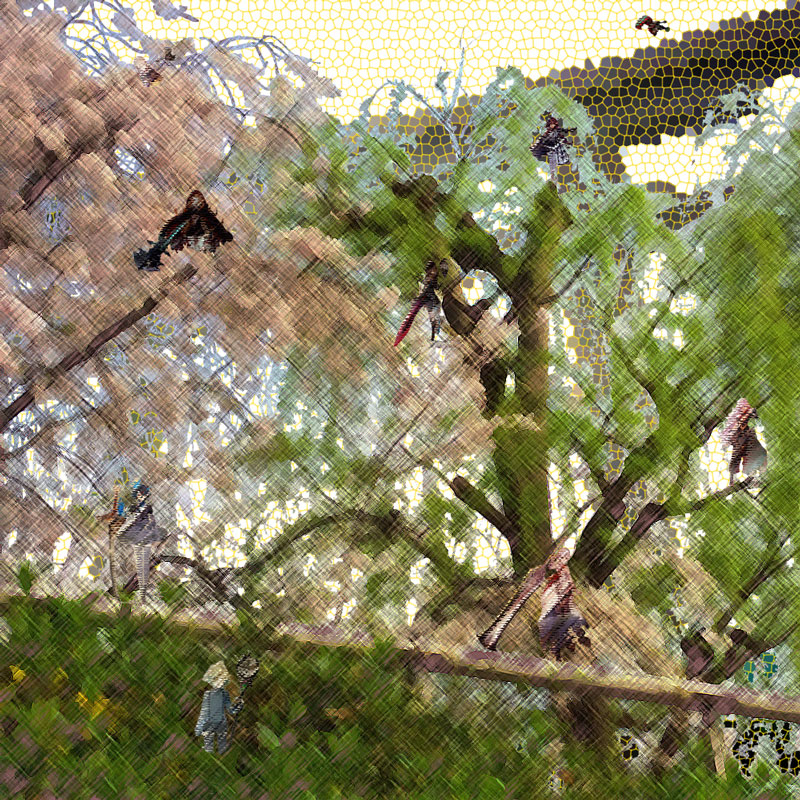

ソフトウェアネットワーク演習Ⅰ
課題:1 フォトショップによるホーム写真作成
制作過程
計11枚の写真を用いて制作。
1,ウェブサイズのアートボードを用意する。
2,画像のキャラクターズと付属品を切り抜き、大きさ、色調、陰影を揃え、付属品とキャラクターをグループ化する。
3,背景となる写真を左右反転させて色調を整える。
4,自然の写真の空の部分を切り抜き、隙間を開ける。色調などもこの時整える。
5,背景にステンドグラス、自然の写真に色鉛筆、キャラクターズに荒いパステルのフィルターをそれぞれかける。
6,背景と自然の写真をアートボードに合わせてトリミングし、それらを重ねる。
7,キャラクターズを任意の場所に配置して完成。
課題:2 イラストレーターによるアイコン制作
制作過程
32mmx32mmの中に収まるようにする.
1,32mmx32mmの正方形を作り、角を5mmほど丸める。
2,枠線と塗りが白の真円を1つ作り、それより2まわりほど小さい黒枠線のみの真円を作り重ねる。
3,さらにその中に2まわりほど小さい黒枠線のみの真円を作り重ねる、
4,幅4mmほどの長方形を1つ垂直に作り、回転で平行にしてコピーし、十字に重ねる。
5,小さい台形をひとつ作り、角を少しだけ丸める。それらを45°ずつで回転させながらコピーし、計8つ作る。
6,先の台形をはじめに作った真円にそれぞれ下三分の一だけ重ね、パスファインダーで一体化させる。
7,できた歯車をグループ化する。
8,同じ要領で大きさ半分ほどの小さい歯車を作り、それを15°だけ傾け、大きい歯車の左上にバランスを見て設置する。
9,できた2つの歯車をグループ化し、黒背景に収まるように設置する。
10,全てをグループ化して完成。